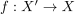
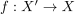
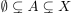
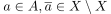
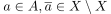
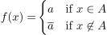
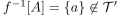

Charakterisierung der indiskreten Topologie anhand der Stetigkeit
1. Satz
Sei  ein topologischer Raum, dann sind folgende Aussagen äquivalent:
ein topologischer Raum, dann sind folgende Aussagen äquivalent:
 ist die indiskrete Topologie
ist die indiskrete Topologie- Für einen topologischer Raum
 ist jede Abbildung  stetig
ist jede Abbildung  stetig
2. Beweis
 ist
ist 2.2. b)  a)
a)
Beweis durch Kontraposition:
Nach Annahme existiert ein mit 
Sei  und
und  die indiskrete Topologie.
Sei zusätzlich  beliebig, so folgt für die Abbildung
die indiskrete Topologie.
Sei zusätzlich  beliebig, so folgt für die Abbildung

2
Dann gilt  da indiskret ist.
Spezialfall mit einelementiger Menge ?